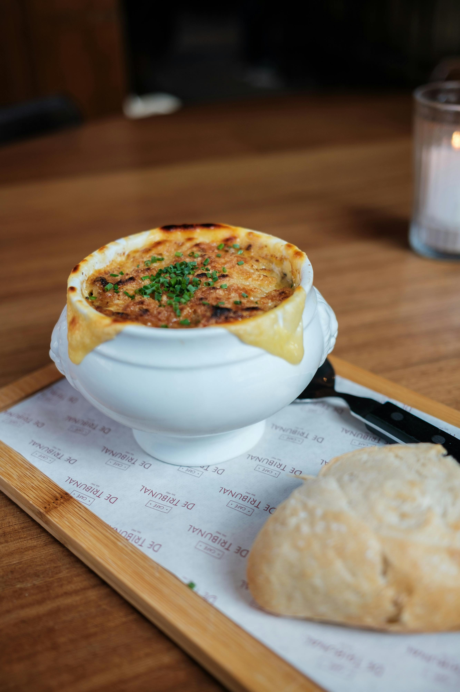

French Onion Soup

Description
French onion soup, also known as soupe à l'oignon gratinée, is a timeless
French favourite made with deeply caramelised onions simmered in a rich
beef stock or broth. It's traditionally topped with crusty bread and
melted cheese, then baked until golden and bubbling. Often served in a
ramekin or handled ceramic crock, this comforting dish is both rustic and
indulgent.
Ingredients
- 1/2 cup unsalted butter
- 2 tablespoons olive oil
- 4 cups sliced onions
- 5 cups beef broth
- 2 tablespoons dry sherry
- 1 teaspoon dried thyme
- 1 pinch salt and pepper to taste
- 4 slices French bread
- 4 slices provolone cheese
- 2 slices Swiss cheese, diced
- 1/4 cup grated Parmesan cheese
Steps
- Gather all ingredients.
-
Melt butter with olive oil in an 8-quart stock pot over medium heat. Add
onions to butter and continually stir until tender and translucent. Do
not brown the onions.
-
Add beef broth, sherry, and thyme. Season with salt and pepper. Let
simmer for 30 minutes. Meanwhile, preheat the oven's broiler.
-
Ladle soup into oven-safe serving bowls and place one slice of bread on
top of each (bread may be broken into pieces if you prefer). Layer each
slice of bread with a slice of provolone, 1/2 slice diced Swiss and 1
tablespoon Parmesan cheese.
-
Place bowls on a cookie sheet and broil in the preheated oven until
cheese bubbles and browns slightly, 2 to 3 minutes.
- Serve hot and enjoy!